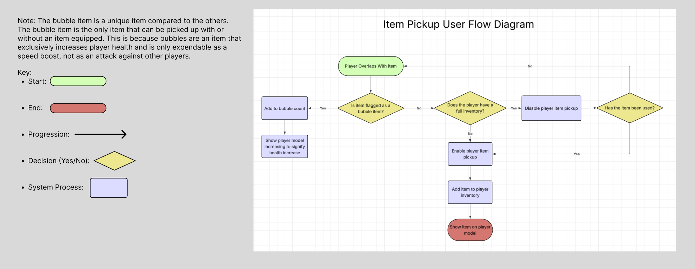
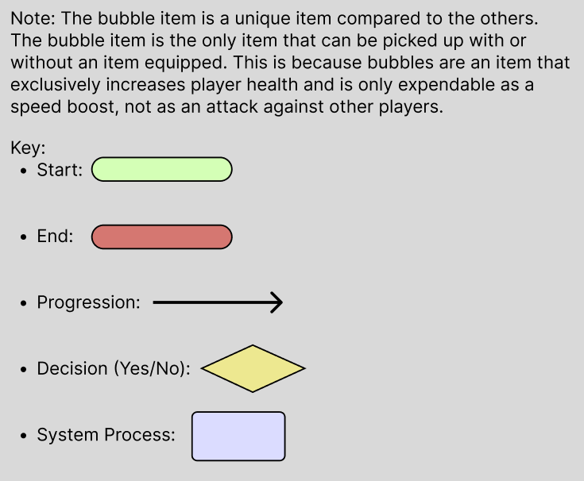
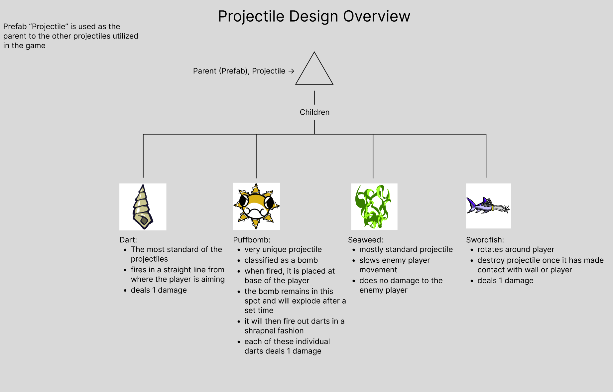
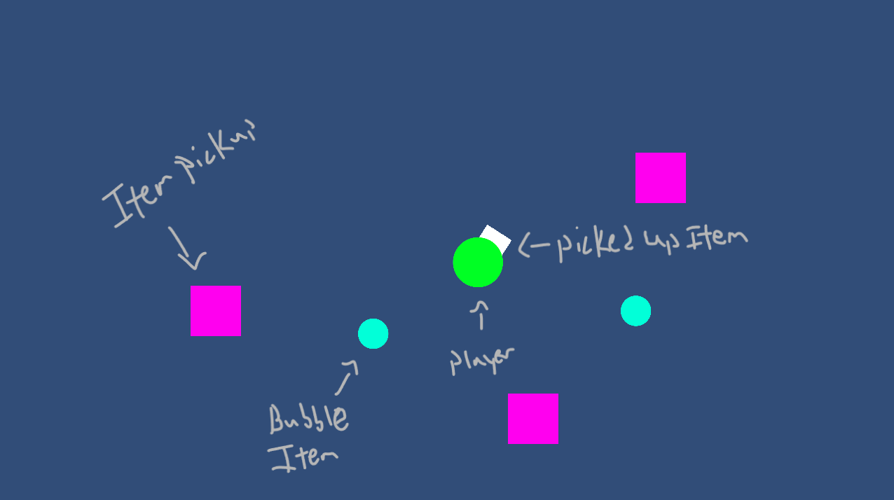
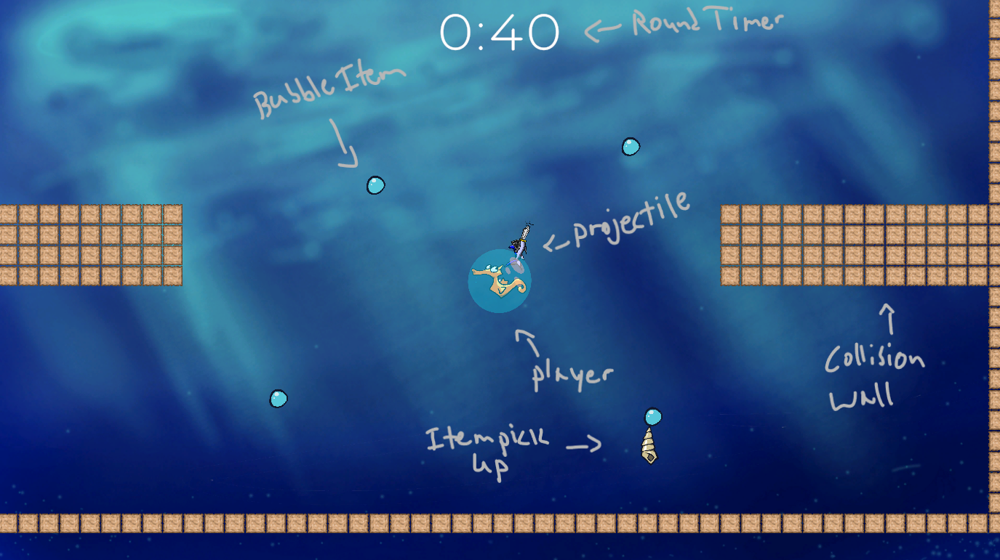

2D Unity Programmer for Bubble Battle (Four Player Party Game)
Global Game Jam 2025 at George Mason University
Project Overview
Bubble Battle is a 2D, top-down, arena-based party game made in the Unity engine and developed by a team of 6 collaborators. I was one of the primary programmers for Bubble Battle, working with two other amazing programmers and three artists. The objective of the game is to have the largest bubble by the end of the timer.
My Role on The Team and Tools Used
My primary roll as a programmer on the team was to program and design the combat systems and levels. I programmed the way that the projectiles behave, how item pickups function, and how the player’s health functions. I also made the levels for the users to play on. I exclusively used Unity and Visual Studio to complete my tasks.
Design Challenges
The primary problem I had to solve was how to design a system to easily add and remove projectiles from the list that players could use. This also included programming and designing unique behaviors for some projectiles such as the bomb item. This worked in tandem with the other problem I had to solve which was creating a player inventory system that was easy to understand for the player. I also had to make levels that were user friendly. They had to have no cluttering of item pickups or projectiles. This could be an issue of difficulty in visual clarity for the players.
Production Process and Work Samples
Shown below in figure 1 is a screenshot of a user flow diagram for the game's item system and figure 2 a key for the diagram. This is a simplified idea of how the items were programmed and intended to function. Players overlap with an item spawned by the item spawner and a check is run to see if they already have an item in their inventory. If there is nothing in the player's inventory, they can pick the item up and it is added to their inventory until ejected as a projectile. If the item the player overlapped with was tagged as a bubble, the player picks it up regardless of whether or not the inventory is full. It is then added to the players bubble count (their health pool) and their player model increases in size.


Figure 3 is a basic diagram of how the projectiles are designed in Bubble Battle. The parent projectile is a prefab that acts as the building blocks for the other projectiles, the children, to be built around. For example, the "dart" projectile is the most basic of the selection and follows it's parent class completely with no variation. However, the "puffbomb" is probably the most unique of the children in the projectile selection.

Final Design of Bubble Battle
Key Notes (Figure 4):

Key Notes (Figure 5):

What Worked? What Did Not Work? What Can Be Improved?
What Worked:
- Using basic sprite shapes before adding detailed sprites (cuts down on time)
- Communicating to teammates every time you pivoted in the project to work on something new
- Consulting other teammates if you are lost or confused
- Taking short breaks to walk away from a problem and come back with a fresh mind
- Ideating game mechanics BEFORE production
- Sticking to a consistent-basic premise of the game and not switching up ideas mid way through production
- Taking 10-15 minutes to check in on what everyone is working on
- Testing game builds several hours before the deadline to check if there are any bugs
What Did Not Work:
- Communication was not always present
- Changes to the game were occasionally made without consulting other teammates prior to the changes
- Some game mechanics were created during production which caused confusion
- Sprites were not consistently made under the same resolution of pixels which caused problems until they were adjusted
- Programming could sometimes get jumbled due to little documentation of how some people’s code worked
- Example: if someone wanted to create a projectile of their own, I did not document how the projectile prefab functions
- There were some miscommunications on who was programming what
- Some teammates did not communicate when they would arrive to help which caused difficulties with finalizing the game
- For this project, we had too many artists and too few programmers
What Would I Improve:
- I would first start by adding sound to the game
- Reorganize file locations to be more coherent and less of a maze to find certain files
- I would consider reworking the projectile system as I think there are scripts that can be combined for the sake of clarity
- I would bring back my original idea of player models decreasing in size instead of dying in one hit
- I would like to try and make a more robust settings menu with screen sizing options and such
- I would like to figure out a way to solve the issue of having players inflate to be much larger than what maps can contain
- I would like to maybe make a statistics page for the end of rounds similar to Smash Brothers
- Add many more projectiles
- Add map hazards
- Maybe add items other than the bubble that can affect the player model (speed boosts or something)
- Add an animation for when players speed boost
User Feedback
I did not manage to have too many people try out the game and give me their thoughts but this is what I could generally gather from a handful of play testers:
- No sound
- Add more art backgrounds
- Getting stuck on map walls due to player size
- Swordfish projectile will get absorbed into player model if they inflate
- Item spawns feel too slow
- Have a projectile type that reflects off walls
- Create a projectile that is kind of like a mortar
- It is not clear when the player is speed boosting
- Players die in one hit which is not very fun
- Add some visual variety to the walls